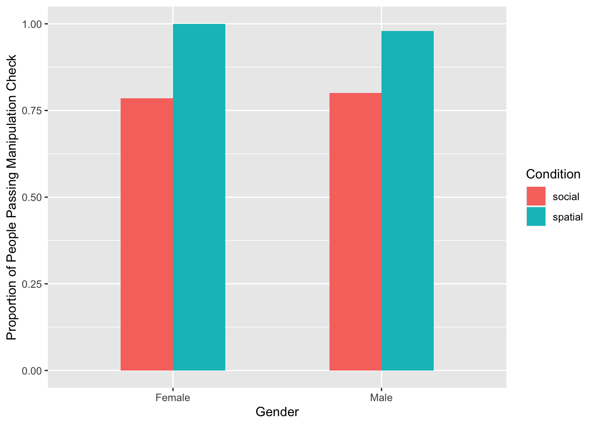
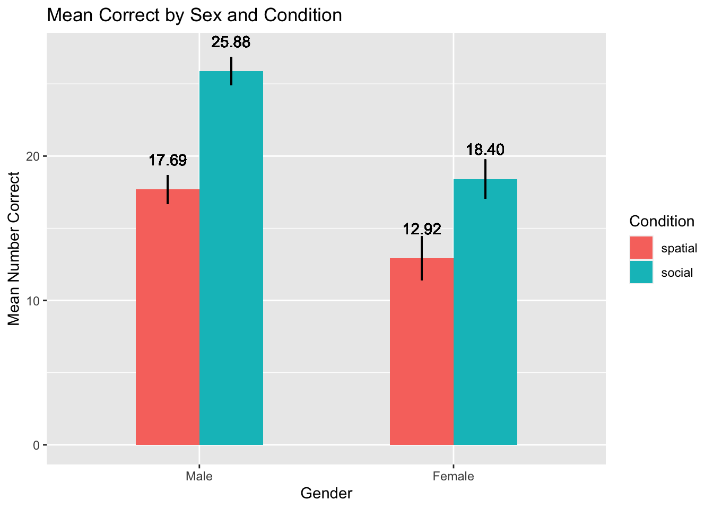
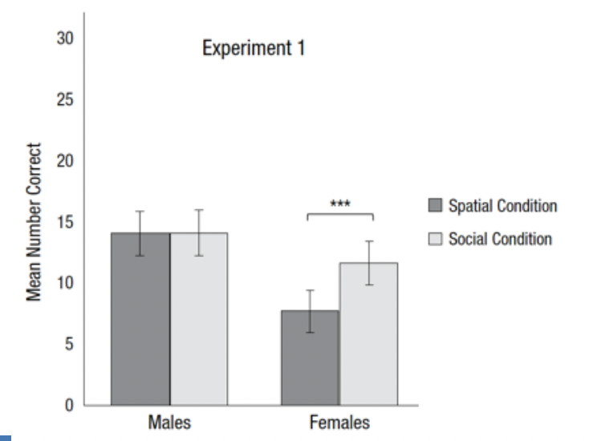
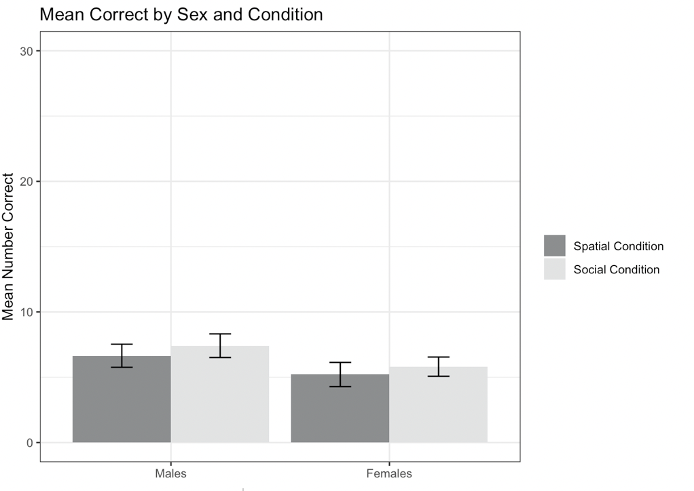
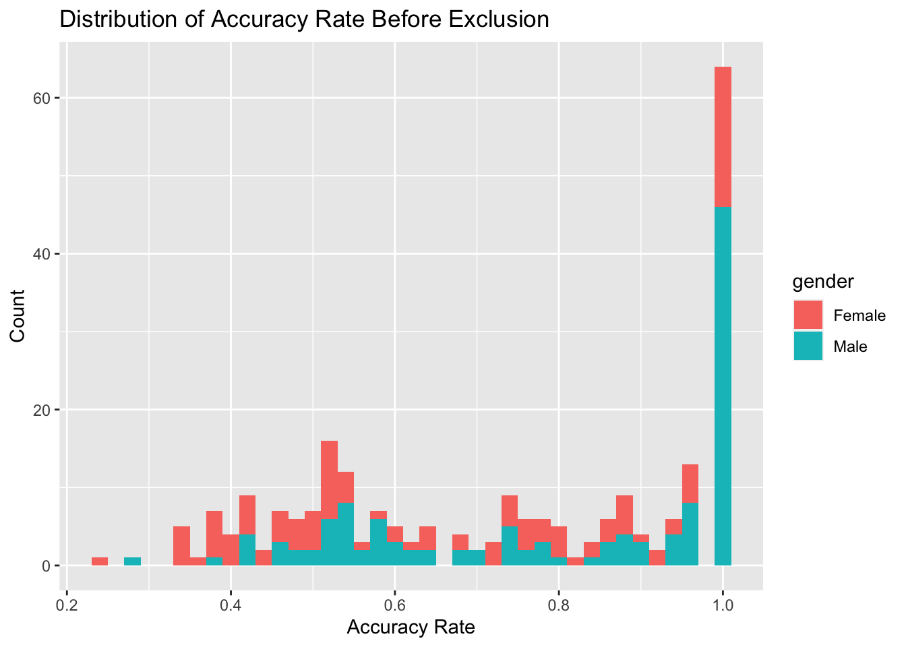
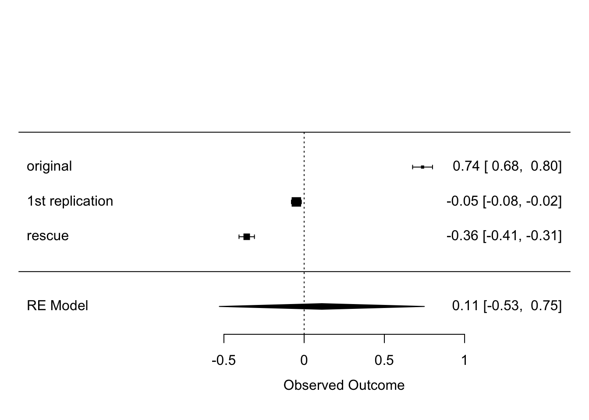

Replication of Experiment 1: perspective-taking tasks by Tamrapi, Heydari & Hegarty (2016, Psychological Science)
Author
Chuqi Hu (chuqihu@stanford.edu)
Published
April 17, 2024
Introduction
The construct of interest in the study is perspective-taking ability. Experiment 1 of Tarampi’s (2016) paper explored how stereotype threat contributes to gender differences in perspective-taking task performances. The researchers found that framing the same task as a spatial or a social task will lead to different performances in men and women. More specifically, they found that women tended to perform better when the same task was framed as a social perspective-taking task rather than a spatial one.
Tarampi(2016) used two tests in their experiment: the spatial orientation test and the road-map test. All the materials can be found on OSF. Participants were tested in person, individually, or in a group of 2-8 people of the same sex. The current replication attempt will focus on the road-map test, adapting it to an online version. In this task, participants will be presented with a map navigation task, where they are asked to label corners to indicate right or left turns. This task will be framed either as a spatial or social task. We are interested in the number of correct labeling across conditions and among the two gender groups.
The prior replication attempt made four main changes compared to the original study.
The original study was conducted in person, and participants were tested individually or in same-sex groups of 2 to 8 participants. The prior replication attempt converted the study to an online format, and participants were tested individually. A concern the replication experimenter raised is whether state induction of gender bias was effective in the online environment.
Participants of the original study were 139 undergraduate students at UC Santa Barbara. The prior replication was done with 255 Mechanical Turk workers whose demographics weren’t specified in the report, so we don’t know if the demographics differ a lot in terms of age and background.
The original study consisted of three parts: two timed pencil-and-paper tests of perspective-taking ability (the object-perspective/spatial orientation test (Hegarty & Waller, 2004) and the road-map test (Money et al., 1965; modified by Zacks et al., 2002)) and a questionnaire that aims to measure autistic trait in adults. The prior replication attempt only kept the road-map test in order to collect more data of interest. They also included two questions at the end of the experiment, one asking about the participant’s prior CS experience and the other asking about participants’ assessment of their math ability.
No description of the exclusion criterion was mentioned in the original paper. The experimenter of the replication attempt did two sets of data analyses using a light exclusion criterion (excluding participants who labeled no corner) and a strict exclusion criterion (excluding those with less than 60% accuracy). The original results did not replicate in either one.
Methods
Power Analysis
The original effect size for the interaction of interest is a partial eta squared equal to 0.03. A power analysis for 80% suggests a sample size of 256. A power analysis for 90% suggests a sample size of 342.A power analysis for 95% suggests a sample size of 423.
Planned Sample
Based on the fact that the sample size of 256 gives us 80% power and that some participant data might be excluded according to the exclusion criteria (which we think will be around 10%), we plan to have a sample size of 282 participants.
The age range of this study has been adjusted to encompass individuals aged 18 to 25. This is a slight expansion from the initial study’s age range of 18 to 22, still ensuring the study focuses on young adult demographics.
The study must also be done on Laptops.
The original study did not specify any exclusion criterion. We will exclude participants (post data collection) who failed the comprehension check, who accurately guessed the study’s hypothesis (explicitly mentioned stereotype threat, or anything about framing the perspective-taking task differently for different gender group), or who clearly put no effort in the task (participants who labeled no corner or participants whose accuracy was below 20%).
Materials
In the original study, “the experiment consisted of two timed pencil-and-paper tests of perspective-taking ability: the object-perspective/spatial-orientation test (Hegarty & Waller, 2004) and the standardized road-map test of direction sense (the road-map test; Money et al., 1965; modified by Zacks et al., 2002). The road-map test consisted of a bird’s-eye diagram of a path through a city. Participants were instructed to imagine walking along the path and write either “R” or “L” at each corner to indicate whether to take a right or left turn. The social version of the task included a human figure at every corner. Participants in the social condition were instructed to imagine themselves taking the perspective of the person as he or she walked along the path. Their score was the number of corners labeled correctly.”
In this rescue project, we will follow the first replication attempt and only focus on the road-map test. In the first replication attempt, participants labeled corners using drop-down menus to indicate either turning left or right. The experimenter expressed concerns about the extra cognitive load related to interacting with the drop-down menus. Therefore, we plan to change the drop-down menus to clicking the right or the left arrow key on the keyboard. Instead of showing the complete roadmap at once, a smaller portion of the map will be shown on each trial.
The code for the replication study was in Javascript, HTML, and CSS. Only partial codes are available, and there is no code for data collection. Thus, the study will be recreated using jsPsych.
Procedure
Participants will be tested individually online. In both conditions, participants will be told that they will complete a task that will test their perspective-taking ability.
“Participants in the spatial condition were given unmodified tests and also received the following information, which emphasized that perspective-taking is a spatial ability in which men have an advantage over women:
Perspective-taking ability can be thought of as a measure of spatial ability. Spatial ability is a cognitive ability that is defined as understanding the relations between objects in space and being able to mentally manipulate them and respond correctly. Males often score higher on measures of spatial ability.
Participants in the social condition were given modified tests, which included human figures, and received the following additional information, which emphasized that perspective-taking is an empathetic ability in which women have an advantage over men:
Perspective-taking ability can be thought of as a measure of empathetic ability. Empathetic ability is a social ability that is defined as being able to identify with and understand what another person is seeing or feeling, and respond appropriately. Females often score higher on measures of empathetic ability.”
The above-mentioned instructions will appear line by line on the screen. Participants will be instructed to read carefully and click the “next” button to go to the next sentence. This is different from the previous replication attempt, and the goal is to achieve a more effective state induction.
After that, participants will be presented with a comprehension check:
fill in the blank: ______ often score higher on measures of ______ ability.
The participants then complete the road-map test. In the road-map test, participants will be first given the instruction and complete an untimed practice trial where they are expected to indicate three corner turns correctly.
Once they complete the practice trial, they will be given 30 seconds to complete as many of the 32 items as possible.
At the end of the study, instead of asking for participants’ CS experience as the experiment did in the first replication attempt, we plan to first ask a question probing participants’ thoughts on the purpose of the study. If participants’ guesses about the study closely aligned with the study’s hypothesis (meaning that they explicitly mentioned something along the lines of gender threat, framing perspective-taking tasks differently for different gender groups, etc…), their data will be excluded for concerns of performance reflecting demand characteristics.
Then, there will be a question asking about their gender, a manipulation check that probes whether the state induction of gender bias has been effective.
For the manipulation check, two multiple-choice questions will be shown.
Perspective-taking ability can be thought of as a measure of ______(Choice1: spatial ability. Choice 2: empathetic ability)
______ (Choice1: Females. Choice 2: Males) often score higher on measures of empathetic/spatial (depending on the condition) ability
The last question will ask whether they have encountered any tech difficulties during the study.
Controls
The fact that the participant needs to click the next button to proceed to the next sentence in the instruction functions as an attention check.
Analysis Plan
The analysis will be a 2 (sex: male, female) X 2 (condition: social, spatial) between-subject analysis of variance (ANOVA). The dependent measure of the key task is the number of corners that a participant correctly labeled. For the ANOVA test, we are mainly interested in the interaction effect.
The original study did not exclude any data based on participants’ performance in the road-map test. However, we’re excluding participants who failed the comprehension check, who guessed the study’s hypothesis, or who clearly did not put in effort for the task (ex., did not label any corner or whose accuracy rate was below 55%).
Differences from Original Study and 1st replication
This study aims to convert the original study to an online format, which is in line with the 1st replication attempt. However, it differs from the 1st replication mainly in five ways:
Instead of showing the instructions in one paragraph, we plan to show the instructions line by line to reflect real-time communication.
Instead of asking the participant to select “right” or “left” from a drop-down menu, we plan to let them use the arrow keys to indicate direction.
We plan to show a smaller portion of the map on each trial.
Unlike the 1st replication, which introduced additional questions probing participants’ CS and math background, we plan to include a comprehension check and ask questions that probe whether the state induction succeeded. This is to address one of the main concerns from the previous replication.
Unlike the original study (which had no exclusion criteria) or the 1st replication (which had two sets of exclusion criteria), we plan to apply exclusion criteria to filter out the data from participants who clearly did not put effort into their answering.
Methods Addendum (Post Data Collection)
Actual Sample
We successfully collected data from 269 participants (132 females:72 social, 60 spatial; 136 males: 64 social, 72 spatial; 1 non-binary: spatial). We exclude the single non-binary participant because this group does not have sufficient data. Following the pre-registered exclusion criteria, we excluded 21 participants who failed the comprehension check, 3 who correctly guessed the study’s hypothesis, and 82 who had an accuracy rate below 55%. After excluding the participants, our data set includes 166 participants (67 females: 42 social, 25 spatial; 99 males: 50 social, 49 spatial).
Differences from pre-data collection methods plan
Our original plan was to collect data from 282 participants. However, due to technical difficulties (the number of data shown on the Prolific website and Proliferate differed), in the end, we only have access to data from 269 participants. Our guess is that some participants closed the tab before the data was sent to Proliferate, but we are not sure. We also excluded one non-binary participant due to insufficient data for this group.
What is unexpected is the large number of participants we excluded using the pre-registered exclusion criteria. We plan to address this by doing exploratory analyses using looser exclusion criteria, especially regarding accuracy rate.
Results
Data preparation
### Data Preparation#### Load Relevant Libraries and Functionslibrary(readr)library(dplyr)
Attaching package: 'dplyr'
The following objects are masked from 'package:stats':
filter, lag
The following objects are masked from 'package:base':
intersect, setdiff, setequal, union
Warning: package 'stringr' was built under R version 4.3.1
library(effectsize)library(metafor)
Warning: package 'metafor' was built under R version 4.3.1
Loading required package: Matrix
Attaching package: 'Matrix'
The following objects are masked from 'package:tidyr':
expand, pack, unpack
Loading required package: metadat
Loading required package: numDeriv
Loading the 'metafor' package (version 4.4-0). For an
introduction to the package please type: help(metafor)
library(here)
here() starts at /Users/chuqihu/Desktop/tarampi2016_rescue
#### Import datafiles <-list.files(path ="../final data/", full.names =TRUE)# read in and combine all the CSV files using bind_rows()combined_data <-lapply(files, function(filepath) { df <-read.csv(filepath)return(df)}) %>%bind_rows() totalp <- combined_data %>%summarize(unique_worker_count =n_distinct(workerid))#### Data exclusion / filtering# exclude unwanted columns and rowsorganized.data <- combined_data %>%select("workerid","condition","stimulus","correct","response","gender","first","second","tech_difficulty","participant_hypothesis","bothQuestionsCorrect") %>%filter (response !=0) %>%filter(gender !="Other")%>%filter (workerid !="na")%>%#excluding those who failed comprehension checksfilter(!(workerid %in%c("167", "65","44","164","169","189","275","262","88","106","313","302","75","251","223","72","261","104","152","234","118")))%>%#excluding those who correctly guessed the hypothesisfilter(!workerid %in%c("289","268","190"))#### Prepare data for analysis - create columns that calculates the percentage of correct answers etc.percentage_correct <- organized.data %>%group_by(workerid)%>%#-1 in the denominator because in the task if 30s pass, and the participant did not finish the 32 items, the last one will automatically marked false.mutate(correct_percent = (sum (correct =="True"))/(sum (correct =="True") +sum (correct =="False")-1))%>%#the line above made the correct_percent of the participants who corrected responded to all 32 items greater than 1. This line is trying to fix itmutate(correct_percent =ifelse(correct_percent >1, 1, correct_percent))strict_exclusion <- percentage_correct %>%#excluding those whose accuracy rate is less than 55%filter (correct_percent >0.55)#prepare the data so that only one row is preserved for each participantready_data <- strict_exclusion %>%group_by(workerid) %>%mutate(correct_count =sum(correct =="True", na.rm =TRUE)) %>%filter(stimulus =="img/spatial/version2/p1.png"| stimulus =="img/social/version2/p1.png")graph_data = ready_data %>%group_by(condition, gender) %>%mutate(mean_correct =mean(correct_count),mean_sem =sd(correct_count) /sqrt(n()) )
Results of control measures
The result of the manipulation check shows that the majority of people still remember the instructions they read after completing the task, indicating that state induction is likely to be effective.
# Prepare data for manipulation checkmanipulation_check <- graph_data %>%group_by(condition, gender) %>%summarise(pass_rate =sum(bothQuestionsCorrect =="True") / (sum(bothQuestionsCorrect =="True") +sum(bothQuestionsCorrect =="False")))
`summarise()` has grouped output by 'condition'. You can override using the
`.groups` argument.
# Plottingggplot(data = manipulation_check, aes(x = gender, y = pass_rate, fill=condition)) +geom_col(position ="dodge", width =0.5) +xlab("Gender") +ylab("Proportion of People Passing Manipulation Check") +labs(fill ="Condition")

Confirmatory analysis
A 2 (sex: male, female) × 2 (condition: social, spatial) between-subjects ANOVA was conducted. The analysis revealed a significant main effect of sex, F(1, 162) = 21.19, p < .001,ηp²= .12. There was also a significant main effect of condition, F(1, 162) = 36.50, p < .001, ηp²= .18. However, the interaction between sex and condition did not replicate, F(1, 162) = 1.241, p = .267,ηp² = .0076.
#ANOVA testanova<-aov(correct_count ~ gender * condition, data = ready_data)summary(anova)
Besides ANOVA, the original study also included t-tests. Like the original study, we did find that females performed better in the social condition (M = 18.4, SD = 8.77, CI = [15.75, 21.05]) than the spatial condition (M = 12.9, SD = 7.58, CI = [9.95, 15.90]), t(56.478)= 2.6966, p= 0.0092. However, unlike the original study, our data suggested that males also performed better in the social condition (M = 25.9, SD = 6.82, CI = [23.99, 27.78]) than the spatial condition (M = 17.7 SD = 6.96, CI = [15.75, 19.65]), t(96.848) = 5.9101, p < .001. Like the original paper, we found males perform better than females in the spatial condition t(96.848) = 5.91, p < .001. However, we also found this trend to hold true in the social condition t(76.665) = 4.49, p < .001.
Welch Two Sample t-test
data: correct_count by condition
t = 2.6966, df = 56.478, p-value = 0.009216
alternative hypothesis: true difference in means between group social and group spatial is not equal to 0
95 percent confidence interval:
1.410983 9.558540
sample estimates:
mean in group social mean in group spatial
18.40476 12.92000
Welch Two Sample t-test
data: correct_count by condition
t = 5.9101, df = 96.848, p-value = 5.106e-08
alternative hypothesis: true difference in means between group social and group spatial is not equal to 0
95 percent confidence interval:
5.436991 10.935254
sample estimates:
mean in group social mean in group spatial
25.88000 17.69388
####Spatial Score By Sexspatial_data = ready_data %>%subset(condition=='spatial')t.test(correct_count ~ gender, data = spatial_data, var.equal =FALSE)
Welch Two Sample t-test
data: correct_count by gender
t = -2.6317, df = 44.867, p-value = 0.0116
alternative hypothesis: true difference in means between group Female and group Male is not equal to 0
95 percent confidence interval:
-8.427697 -1.120058
sample estimates:
mean in group Female mean in group Male
12.92000 17.69388
####Social Score By Sexsocial_data = ready_data %>%subset(condition=='social')# Recoding gender (example: assuming "male" and "female" as values)social_data$gender <-ifelse(social_data$gender =="Male", "Female", "Male")# Running the t-test againt.test_result =t.test(correct_count ~ gender, data = social_data, var.equal =FALSE)print(t.test_result)
Welch Two Sample t-test
data: correct_count by gender
t = 4.4954, df = 76.665, p-value = 2.425e-05
alternative hypothesis: true difference in means between group Female and group Male is not equal to 0
95 percent confidence interval:
4.163821 10.786655
sample estimates:
mean in group Female mean in group Male
25.88000 18.40476
Current Replication Results
# Adjust the factor levels for 'condition' so that it matches the graph of the original papergraph_data$condition <-factor(graph_data$condition, levels =c("spatial", "social"))# Plottingggplot(data = graph_data, aes(x =reorder(gender, -mean_correct), y = mean_correct, fill = condition)) +geom_col(position ="dodge", width =0.5) +geom_errorbar(aes(ymin = mean_correct - mean_sem, ymax = mean_correct + mean_sem),width =0,position =position_dodge(0.5) ) +geom_text(aes(label =sprintf("%.2f", mean_correct), y = mean_correct +1.3), position =position_dodge(0.5),vjust =-0.5 ) +xlab("Gender") +ylab("Mean Number Correct") +labs(fill ="Condition")+ggtitle("Mean Correct by Sex and Condition")

Original Study Results 
1st Replication Results 
Exploratory analyses
We are also interested in seeing whether our exclusion criteria - specifically the one for accuracy cutoff - are too strict. Here, we conduct exploratory analysis with a loose exclusion criteria: excluding no participant based on accuracy rate.
The distribution of participant’s accuracy in performance by gender is shown in the graph below.
Warning in geom_histogram(stat = "count"): Ignoring unknown parameters:
`binwidth`, `bins`, and `pad`

We conducted an ANOVA test using this dataset. Again, the analysis revealed a significant main effect of sex, F(1, 162) = 41.43, p < .001,ηp²= .15; a significant main effect of condition, F(1, 162) = 30.85, p < .001, ηp²= .11. However, the interaction between sex and condition still did not replicate, F(1, 162) = 2.128, p = .146,ηp² = .0088.
anova<-aov(correct_count ~ gender * condition, data = loose_exclusion)summary(anova)
Besides applying looser exclusion criteria, we are also interested in seeing whether the accuracy rates of the two gender groups differ. If it does differ, it suggests that males and females are taking different strategies when taking the task: one group is being more scrutinized.
A t-test conducted using the dataset obtained under the strict exclusion criteria reveals no significant difference between the two gender groups’ performance in terms of accuracy, t(88.7) = 1.41, p = .16. However, a t-test conducted using the loose-exclusion dataset suggests that males show higher accuracy than females in the task, t(237.8) = 4.28, p < .001.
Welch Two Sample t-test
data: correct_percent by gender
t = 4.2822, df = 237.77, p-value = 2.687e-05
alternative hypothesis: true difference in means between group Female and group Male is not equal to 0
95 percent confidence interval:
0.06532247 0.17663350
sample estimates:
mean in group Female mean in group Male
0.7962476 0.6752696
Discussion
Mini meta analysis
meta<-read_csv("meta.csv")
Rows: 3 Columns: 5
── Column specification ────────────────────────────────────────────────────────
Delimiter: ","
chr (1): Study
dbl (3): N, d, d_se
lgl (1): Citation
ℹ Use `spec()` to retrieve the full column specification for this data.
ℹ Specify the column types or set `show_col_types = FALSE` to quiet this message.
Random-Effects Model (k = 3; tau^2 estimator: REML)
logLik deviance AIC BIC AICc
-1.6951 3.3902 7.3902 4.7765 19.3902
tau^2 (estimated amount of total heterogeneity): 0.3181 (SE = 0.3187)
tau (square root of estimated tau^2 value): 0.5640
I^2 (total heterogeneity / total variability): 99.83%
H^2 (total variability / sampling variability): 591.86
Test for Heterogeneity:
Q(df = 2) = 766.4427, p-val < .0001
Model Results:
estimate se zval pval ci.lb ci.ub
0.1103 0.3259 0.3385 0.7350 -0.5285 0.7492
---
Signif. codes: 0 '***' 0.001 '**' 0.01 '*' 0.05 '.' 0.1 ' ' 1
forest(mini_meta_mod)

Combining across the original paper, 1st replication, and 2nd replication, the aggregate effect size is 0.11.
Another direct replication was done by Geer & Ganley (2023).They reported a significant main effect of sex, F(1, 133) = 11.18, p = .001, η2 = .08, such that males (M = 10.04, 95% CI = [8.75, 11.32]) labelled more turns correctly on average than did females (M = 7.25, 95% CI = [6.22, 8.28]). When looking at female participants specifically, there was no significant difference in performance of the two tasks t(74) = 1.07, p = .289, d = .24.
Summary of Replication Attempt
The key result of the original study - the interaction effect between sex and condition - was not replicated. However, we did replicate the main effect of sex and the main effect of condition. Unlike the original study, our data suggested that males performed better in both spatial and social conditions. Thus, on a scale of 0-1, I would rate this project a 0.25 in terms of how well the original study’s result replicates.
In terms of methodological similarity, I would say this replication is a very close replication of the original study (LeBel et al.,2017). Although the physical setting and the procedural details are different, the effect and hypothesis, construct of IV and DV, and population largely matched the original study.
Commentary
The exploratory analysis suggests that the pattern we see in our confirmatory analysis still holds true even if we apply looser exclusion criteria. Moreover, the dataset for the confirmatory analysis indicates no significant differences in performance accuracy between the two gender groups. This implies that the smaller number of corners labeled by females may not necessarily mean a higher level of scrutiny in the task.
However, there are several factors that might have contributed to the failure of the replication.
A large number of data (~38%) was excluded after applying the pre-registered exclusion criteria. Particularly, many participants did not meet the 55% accuracy rate. It could be that we overestimated people’s performance on the task, or it could mean that people put in minimal effort when doing the task online.
Compared to the original paper and the 1st replication, this current replication also shows that people labeled more corners in general. This is possibly due to pressing the left/right arrow key requiring less cognitive load than writing down “L” or “R” (original study’s method) or selecting letters from a drop-down menu (1st replication’s method). It is possible that the results we get are modulated by or limited by the studies’ methods.
Although the manipulation checks at the end suggested that people still remember the study instructions that characterize the task, this is only indirect evidence for the state induction being effective. In the original study, participants were tested in person and heard the instructions from an experimenter. It is possible that the success of a subtle state induction like this depends on real-time social interaction.
The original author raised a concern about showing a smaller portion of the map on each trial; it might cause participants to focus their attention differently: in the original study, people need to focus both on a specific part and ignore the surroundings mentally. In the current version, less effort is needed to ignore the surroundings.
Another concern from us is that the current approach does not allow participants to go back and change their answers on previous trials. Switching answers (or doing the task out of sequence) was possible in the original paper and 1st replication. This change might have impacted the approach people take in doing the task.